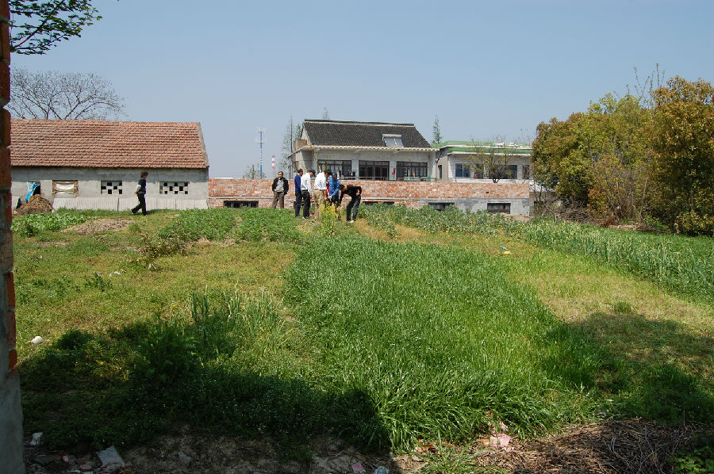

嘉兴市文物保护网 · 市级文物保护点 · 2020-11-09 · 原文

灶山坟遗址位于嘉兴市南湖区新丰镇永丰村陈家浜自然村，高墩范围现目测约10000余平方米。据当地人周荣生回忆，2002年其在此处挖出一石钺（据其描述石钺表面抛光处理疑为新石器时代良渚文化器物，2004年被其以50元卖给文物贩子）并有大量夹砂红陶罐（器物丢弃）经普查队用洛阳铲打探洞2处，深逾1.2米，采集到少量陶碎片，并发现文化层迹象，待与省考古所专家联系进一步核实遗址年代和范围。嘉兴新发现的遗址较少，灶山坟遗址属新石器时代良渚文化遗址，具有较高的历史和科学价值。2009年公布为嘉兴市文物保护点。